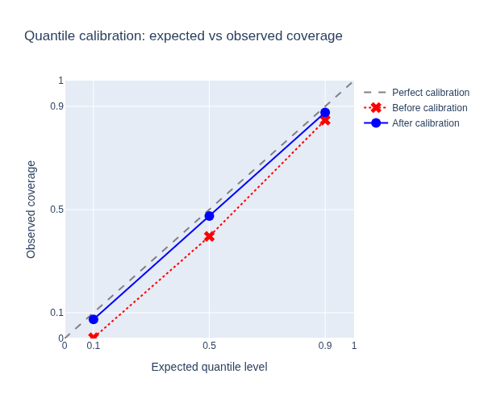

Quantile Calibration#
Improve the reliability of probabilistic forecasts using isotonic quantile calibration. A well-calibrated P10 quantile should exceed actual values roughly 10 % of the time — this tutorial shows how to measure and correct deviations.
What you’ll learn:
Measure quantile calibration with observed coverage
Add isotonic calibration as a postprocessing step
Compare before/after calibration on real data
Note
This tutorial uses a small data slice for fast execution.
See examples/benchmarks/ for production-scale runs.
Key API references:
IsotonicQuantileCalibrator
· ForecastingWorkflowConfig
Load data and train an uncalibrated model#
We start with the same GBLinear setup as the Forecasting Quickstart and
measure how well its predicted quantiles match observed coverage.
The ForecastingWorkflowConfig
defines the model architecture and quantile levels.
from datetime import datetime, timedelta
import pandas as pd
import plotly.graph_objects as go
from openstef_core.testing import load_liander_dataset
from openstef_core.types import LeadTime, Q
from openstef_models.presets import ForecastingWorkflowConfig, create_forecasting_workflow
from openstef_models.presets.forecasting_workflow import GBLinearForecaster
dataset = load_liander_dataset()
train_start = datetime.fromisoformat("2024-03-01T00:00:00Z")
train_end = train_start + timedelta(days=45)
forecast_end = train_end + timedelta(days=7)
train_dataset = dataset.filter_by_range(start=train_start, end=train_end)
predict_dataset = dataset.filter_by_range(
start=train_end - timedelta(days=14),
end=forecast_end,
)
quantiles = [Q(0.1), Q(0.5), Q(0.9)]
config = ForecastingWorkflowConfig(
model_id="uncalibrated_gblinear",
model="gblinear",
horizons=[LeadTime.from_string("PT36H")],
quantiles=quantiles,
target_column="load",
temperature_column="temperature_2m",
relative_humidity_column="relative_humidity_2m",
wind_speed_column="wind_speed_10m",
radiation_column="shortwave_radiation",
pressure_column="surface_pressure",
verbosity=0,
mlflow_storage=None,
gblinear_hyperparams=GBLinearForecaster.HyperParams(n_steps=50),
)
workflow_uncal = create_forecasting_workflow(config=config)
workflow_uncal.fit(train_dataset)
forecast_uncal = workflow_uncal.predict(predict_dataset, forecast_start=train_end)
print(f"Forecast rows: {len(forecast_uncal.data)}")
Forecast rows: 672
Measure calibration quality#
For a perfectly calibrated forecast at quantile \(p\), the fraction of observations falling below the predicted value should equal \(p\). We compute the observed coverage for each quantile and compare it to the expected level.
actuals = predict_dataset.data["load"].loc[train_end:].reindex(forecast_uncal.data.index).dropna()
forecast_aligned = forecast_uncal.data.loc[actuals.index]
expected = [float(q) for q in quantiles]
observed_uncal = [float((actuals <= forecast_aligned[f"quantile_P{int(float(q) * 100)}"]).mean()) for q in quantiles]
calibration_df = pd.DataFrame({
"quantile": [f"P{int(float(q) * 100)}" for q in quantiles],
"expected": expected,
"observed": observed_uncal,
"error": [o - e for o, e in zip(observed_uncal, expected, strict=True)],
})
print("Calibration before isotonic correction:")
print(calibration_df.to_string(index=False))
Calibration before isotonic correction:
quantile expected observed error
P10 0.1 0.002976 -0.097024
P50 0.5 0.395833 -0.104167
P90 0.9 0.846726 -0.053274
Add isotonic calibration#
IsotonicQuantileCalibrator is a postprocessing transform that learns a
monotonic mapping from predicted quantiles to observed quantile levels.
During training it fits on the validation split; during prediction it
corrects each quantile value.
We create a second workflow identical to the first, but with the calibrator appended to its postprocessing pipeline.
from openstef_models.transforms.postprocessing import IsotonicQuantileCalibrator
config_cal = config.model_copy(update={"model_id": "calibrated_gblinear"})
workflow_cal = create_forecasting_workflow(config=config_cal)
# Append isotonic calibration to the existing postprocessing pipeline
workflow_cal.model.postprocessing.transforms.append(
IsotonicQuantileCalibrator(
quantiles=quantiles,
use_local_quantile_estimation=True,
)
)
workflow_cal.fit(train_dataset)
forecast_cal = workflow_cal.predict(predict_dataset, forecast_start=train_end)
Compare calibration before and after#
forecast_cal_aligned = forecast_cal.data.loc[actuals.index]
observed_cal = [float((actuals <= forecast_cal_aligned[f"quantile_P{int(float(q) * 100)}"]).mean()) for q in quantiles]
comparison_df = pd.DataFrame({
"quantile": [f"P{int(float(q) * 100)}" for q in quantiles],
"expected": expected,
"observed (before)": observed_uncal,
"observed (after)": observed_cal,
"error (before)": [o - e for o, e in zip(observed_uncal, expected, strict=True)],
"error (after)": [o - e for o, e in zip(observed_cal, expected, strict=True)],
})
print(comparison_df.to_string(index=False))
quantile expected observed (before) observed (after) error (before) error (after)
P10 0.1 0.002976 0.074405 -0.097024 -0.025595
P50 0.5 0.395833 0.474702 -0.104167 -0.025298
P90 0.9 0.846726 0.876488 -0.053274 -0.023512

Points closer to the diagonal indicate better calibration. The isotonic correction pulls the observed coverage towards the expected level, improving the reliability of uncertainty estimates. To measure calibration stability over longer time horizons, combine this with a Backtesting Quickstart.
Next steps#
Backtesting Quickstart — measure calibration consistency over realistic operational periods.
Ensemble Forecasting — apply calibration to ensemble models for combined accuracy and reliable uncertainty.